Week 6¶
Three Ensembles Cont’d¶
The three ensembles are the same when particle number N is really large, 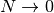 .
The reason is that
- when N becomes really large, the interaction between system and reservoir becomes really negligible. The variance of Gaussian distribution is proportional to 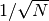.
- 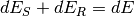 and we know so when the energy of the system increase that of reservoir drop. Professor Kenkre have a way to prove that the energy of the system is peaked at some value. However I didn’t get it.
Warning
Ask him why the value is peaked.
Most Probable Distribution¶
Quite different from Gibbs’ ensemble theory, Boltzmann’s theory is about most probable distribution.
- Classical distinguishable particles 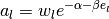;
- Bosons 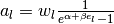;
- Fermion 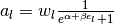.

This image tells us that the three lines converge when the factor 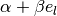 becomes large. Also Fermions have less micro states than classical particles because of Pauli exclusive principle.
being large can have several different physical meanings.
- Temperature low;
- Energy high;
- Chemical coupling coefficient
 large.
large.
We have several identical conditions for the three distribution to be the same.
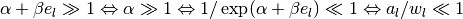
where the last statement is quite interesting. 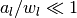 means we have much more states then particles and the quantum effects becomes very small.
Warning
One should be careful that even when the above conditions are satisfied, the number of micro states for classical particles is very different from quantum particles,
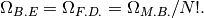
This will have effects on entropy eventually.
Recall that thermal wavelength 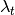 is a useful method of analyzing the quantum effect. At high temperature, thermal wavelength becomes small and the system is more classical.
Hint
- Massive particles 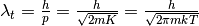
- Massless particles 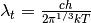
However, at high temperature, the three micro states numbers are going to be very different. This is because thermal wavelength consider the movement of particles and high temperature means large momentum thus classical. The number of micro states comes from a discussion of occupation of states.
Important
What’s the difference between ensemble probability density and most probable distribution? What makes the +1 or -1 in the occupation number?
Most probable distribution is the method used in Boltzmann’s theory while ensemble probability density is in ensemble theory. That means in ensemble theory all copies (states) in a canonical ensemble appear with a probability density  and all information about the type of particles is in Hamiltonian.
and all information about the type of particles is in Hamiltonian.
Being different from ensemble theory, Boltzmann’s theory deals with number of micro states which is affected by the type of particles. Suppose we have N particles in a system and occupying 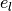 energy levels with a number of particles. Note that we have a degeneration of 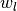 on each energy levels.

(Gliffy source here .)
For Boltzmann’s theory, we need to
- Calculate the number of micro states of the system;
- Calculate most probable distribution using Lagrange multipliers;
- Calculate the average of an observable using the most probable distribution.
Calculation of number of micro states
Calculation of the number of micro states requires some basic knowledge of different types of particles.
For classical particles, we can distinguish each particle from others and no restrictions on the number of states on each energy level. Now we have 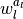 possible states for each energy level. Since the particles are distinguishable we can have 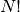 possible ways of exchanging particles. But the degenerated particles won’t contribute to the exchange (for they are the same and not distinguishable) which is calculated by .
Finally we have
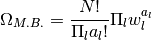
as the number of possible states.
With similar techniques which is explicitly explained on Wang’s book, we get the number of micro states for the other two types of particles.
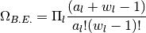
is the number of micro states for a Boson system with a 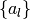 distribution.
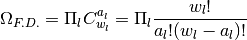
is the number of micro states for a Fermion system with a distribution . We get this because we just need to pick out states for particles on the energy level.
The Exact Partition Function¶
DoS and partition function have already been discussed in previous notes.
Is There A Gap Between Fermion and Boson?¶
Suppose we know only M.B. distribution, by applying this to harmonic oscillators we can find that

where 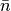 is given by
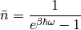
which clearly indicates a new type of Boson particles.
So classical statistical mechanics and quantum statistical mechanics are closely connected not only in the most micro state numbers but also in a more fundamental way.
Hint
Note that this is possible because energy differences between energy levels are the same for arbitrary adjacent energy levels. Adding one new imagined particle with energy 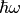 is equivalence to excite one particle to higher energy levels. So we can treat the imagined particle as a Boson particle.
{kind=link}